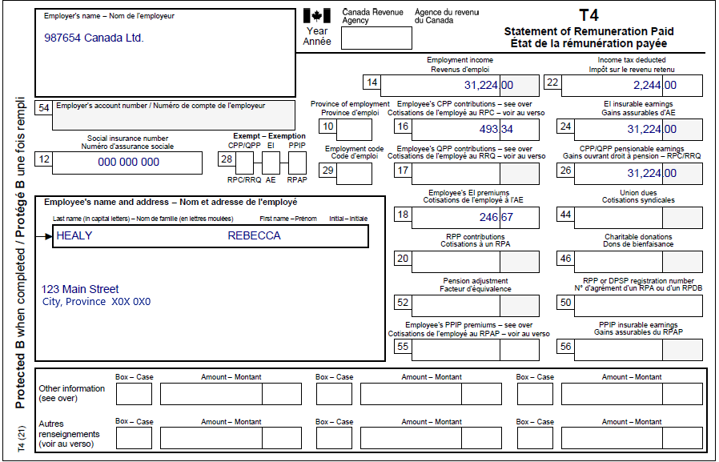

Claiming the disability tax credit and caregiver amount for a dependant
Pre-test question
That's correct
An individual may not claim the disability amount transferred from a dependant for a child for whom they had to pay child support. However, if someone was separated from their spouse or common-law partner for only part of the year because of a breakdown in the relationship, special rules may apply.
Sorry, that's incorrect
An individual cannot claim the disability amount transferred from a dependant for a child for whom they had to pay child support. However, if someone was separated from their spouse or common-law partner for only part of the year because of a breakdown in the relationship, special rules may apply.
Instructions
- Open the tax software
- Review the Background information and Required slips (tax slips, receipts, etc.)
- Provide all required information for the appropriate sections of the tax software
- Once completed, compare your results with the solution provided
- Afterwards, refer to the Takeaway points
Background information
Situation
Rebecca is a single parent who lives with her son David in her own home. David has a physical impairment and has been approved for the disability tax credit. David relies on Rebecca to provide him with food, shelter and clothing. He does not have any income and has no other caregivers. Rebecca wants to claim David as a dependant and claim all related credits.
Identification information
| Name | Rebecca Healy |
|---|---|
| Social insurance number (SIN) | 000 000 000 |
| Address | 123 Main Street City, Province X0X 0X0 |
| Date of birth | March 8, 1960 |
| Marital status | Divorced |
Required slips
T4 – Statement of Remuneration Paid (987654 Canada Ltd.)
Text version of the T4 slip
T4 – Statement of Remuneration Paid
Protected B
Employer’s name: 987654 Canada Ltd.
Employee’s name and address:
Last name: Healy
First name: Rebecca
123 Main Street
City, Province X0X 0X0
Box 12: Social insurance number: 000 000 000
Box 14: Employment income: 31,224.00
Box 16: Employee’s CCP contributions: 493.34
Box 18: Employee’s EI premiums: 246.67
Box 22: Income tax deducted: 2,244.00
Box 24: EI insurable earnings: 31,224.00
Box 26: CCP/QPP pensionable earnings: 31,224.00
Review your results
Solutions will be available Feb 2023 via link to PDF.
Takeaway points
Steps to follow
- Review their background information and required slips
- In Interview setup, tick the box next to Employment income and employment insurance benefits (T4, T4E/RL-6) in the Employment income and other benefits section
- Click T4 and employment income in the left-side menu and the + sign next to T4 to enter the information from the tax slip
- Click on add dependant next to the Family head (Rebecca Healy) tab and complete the Dependant ID section
- Click Medical and disability in the left-side menu and click the + sign next to Infirmity and disability amounts for the dependant* in the Disability deductions, caregiver section
- Enter the applicable information in the Name or description of dependant’s infirmity field
- Select the appropriate responses from the Is the dependant eligible for the disability amount on federal line 31600? and Does the dependant’s infirmity provide entitlement to the Canada caregiver amount? drop-down menus
The software automatically claims the Amount for an eligible dependant (line 30400), the Canada caregiver amount (line 30500) and the Disability amount transferred from a dependant (line 31800) on Rebecca’s tax return. In this case, the Canada caregiver amount is claimed on line 30500 because David is Rebecca’s child, and he is under 18 years of age. However, the Canada caregiver amount is found on different lines (30300, 30400, 30425, 30450 and 30500) of a tax return depending on the individual’s relationship with the person who has a disability.
For more information refer to UFile instructions.